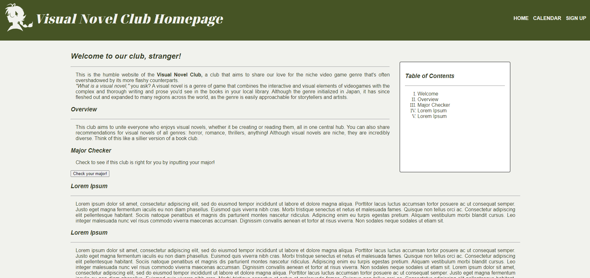
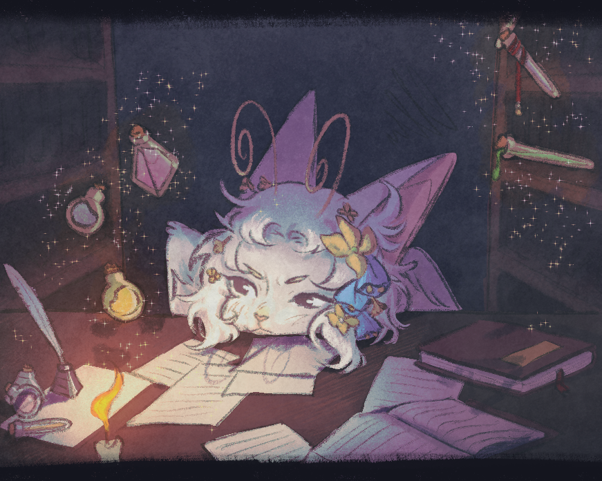

Gallery
A gallery of all of my works. Websites not linked, just used to showcase my programming.
Websites I've built

Illustrations

A gallery of all of my works. Websites not linked, just used to showcase my programming.